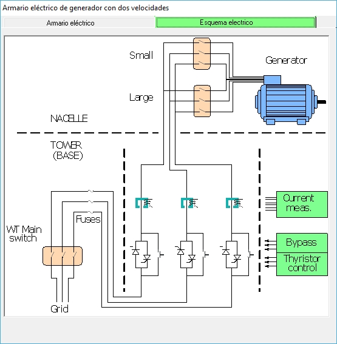

Obiettivo:Osservare il cambiamento di modalità associato al salto da 1000 a 1500 e il suo impatto sul controllo.
Cosa osservare:Velocità di destinazione, stato di controllo e risposta di potenza.
Cosa notare:Variabile che attiva il cambiamento, prima/dopo lo stato e i transienti.
💡 Notare se le punte di potenza / gocce si verificano durante la transizione.
L'obiettivo di questa pratica è quello di familiarizzare gli studenti con il concetto di cambiare la "modalità di connessione" del generatore elettrico alla griglia, e le ragioni per cui questa funzionalità è necessaria.
In questa classe, presumiamo che la turbina eolica sia collegata alla griglia (produzione), con vento che forza l'uso della connessione a 6 poli del generatore (piccolo generatore). VediImpostazione delle condizioni per l'ingresso in produzione con vento basso.
In questo esperimento, aumenteremo la velocità del vento in modo che ci sia un cambiamento nella connessione del generatore a 4 poli (grande generatore): questa velocità del vento deve essere superiore al "Min per Grande Gen. VediValori del vento funzionali. La velocità minima del vento per questa transizione è di 6,6 m/s. Modificare la velocità del vento per, ad esempio, 12 m/s utilizzando i tasti "Page Forward" (vedere punto 7 inImpostazione delle condizioni per l'ingresso in produzione con vento basso).
Su un registratore con il pannello "Cutin + Cutout + Production", vedrete la seguente evoluzione del segnale.

Si può vedere che come il vento aumenta, la potenza generata aumenta: questo avviene fino a quando il vento supera (per un certo tempo almeno) la velocità di 6,6 m/s. Quando questo valore viene superato, il controller avvia un'operazione acambiare il collegamento del generatore, che passerà da una connessione a 6 poli (piccolo generatore) ad una connessione a 4 poli (grande generatore).
Per fare questo, deve disconnettere il generatore dalla griglia: per farlo, cambia il campo delle lame in modo che la potenza generata sia ridotta e disattiva il contattore di bypass di tiro. In quel momento, la velocità di rotazione dell'albero generatore è caduta sotto la velocità sincrona del "piccolo generatore", che è 1.000 giri/min. In questa situazione, con il generatore disconnesso, la modalità di connessione del generatore è cambiata. Questo viene fatto utilizzando i contatti mostrati nella scheda "Electrical diagram" del sinottico "Electrical cabinet". Vedi la figura seguente.

At that moment, the controller begins a grid connection operation (cutin): it controls the pitch so that mechanical torque is extracted from the wind, which accelerates the power train; when the generator's rotational speed approaches the synchronous speed (now 1,500 rpm), the thyristors are progressively opened (see Avviamento morbido (collegamento morbido) alla griglia), culminante nell'attivazione dei contattori di bypass di tiro.
Una caratteristica notevole della turbina eolica simulata è che è in grado di eseguire questa operazione in un tempo molto breve, sull'ordine di 25 secondi. Questo è importante a causa della perdita di produzione che comporta.